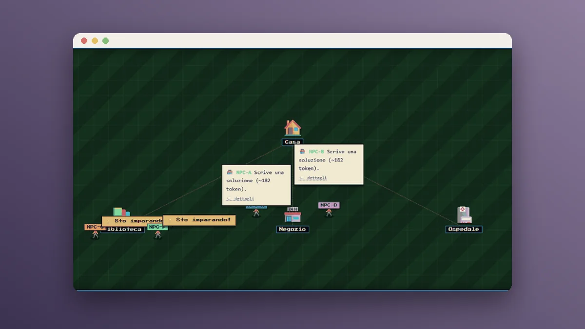
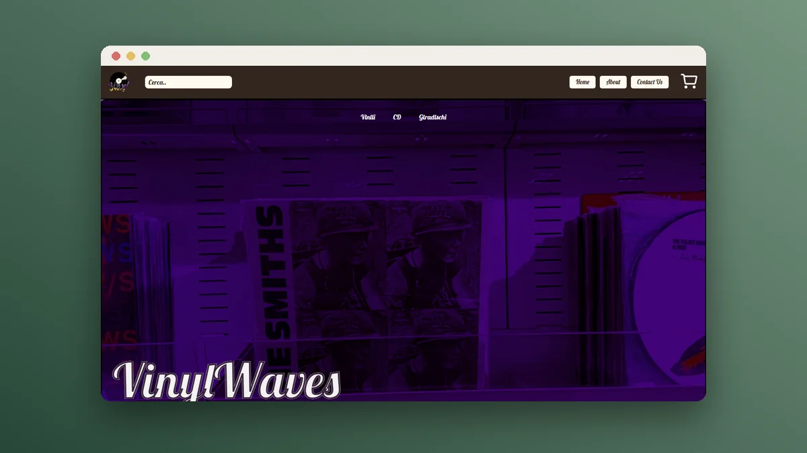
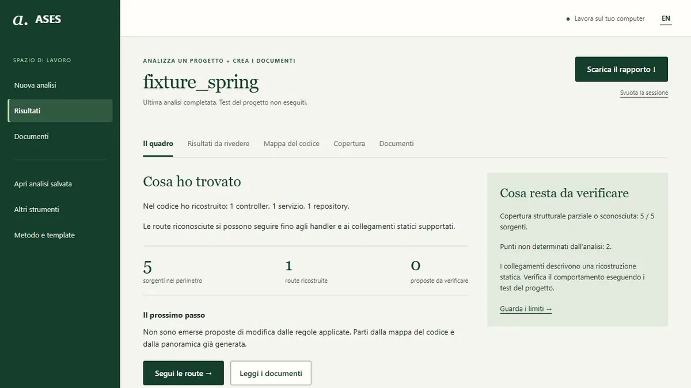

Portfolio
Software, research and cybersecurity
I am a Computer Science student at the University of Salerno. This is where I collect the software projects I have built, an independent research project and the case studies from the Google Cybersecurity Certificate.
Software
Projects
Software projects, with code and instructions on GitHub.

Ongoing researchProcedural Memory Lab
Does a small language model improve by retrieving procedures, or does it only see similar answers again? Experimental research on Python functions with real bugs, checked by pytest and compared across four configurations.
Python, pytest, language models, experimental evaluation, causal verificationExplore the project →
University projectVinylWaves
A Java web shop for vinyl records, CDs and turntables, developed by a team of three for the Web Software Technologies course. It includes a catalogue with search and filters, accounts, cart, orders and product management.
Java 21, Jakarta Servlet and JSP, MySQL, MavenExplore the project →- University project
JustInTime
An academic project developed by a team of four: a turn-based card game with a timer, for two to four players. It includes registration and login, matches with special cards, local and global leaderboards, achievements and feedback, with the project documentation (RAD, SDD, ODD).
Java 23, Spring Boot, Thymeleaf, JavaScript, MySQLExplore the project → 
In developmentASES, Architecture and Software Evidence Scanner
A scanner that reconstructs what a codebase actually does before recommending how it should change: it classifies the files, collects facts, keeps counter-evidence and only then infers. It analyzes Java, Python, TypeScript and frontend projects.
Python, code analysis, software architectureExplore the project →
Training
Google Cybersecurity Certificate
An entry-level online training program developed by Google and offered on Coursera, aimed at those who intend to enter the field of cybersecurity. It combines lessons, assessments and hands-on labs based on simulated scenarios.
- Provider
- Google, through Coursera
- Level
- Beginner, no prerequisites
- Duration
- About 170 hours of instruction
- Format
- Lessons, assessments and hands-on labs